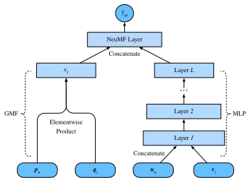

Lọc cộng tác bằng mạng nơ-ron cho xếp hạng cá nhân hóa¶
Phần này vượt ra ngoài phản hồi tường minh, giới thiệu khung lọc cộng tác bằng mạng nơ-ron (neural collaborative filtering, NCF) cho gợi ý với phản hồi ngầm định. Phản hồi ngầm định xuất hiện rộng khắp trong các hệ thống gợi ý. Các hành động như nhấp chuột, mua và xem là những phản hồi ngầm định phổ biến, dễ thu thập và thể hiện sở thích của người dùng. Mô hình mà chúng ta sẽ giới thiệu, có tên NeuMF [He.Liao.Zhang.ea.2017], viết tắt của neural matrix factorization, nhằm xử lý tác vụ xếp hạng cá nhân hóa với phản hồi ngầm định. Mô hình này tận dụng tính linh hoạt và phi tuyến của mạng nơ-ron để thay thế các tích vô hướng trong phân rã ma trận, với mục tiêu tăng khả năng biểu đạt của mô hình. Cụ thể, mô hình này được cấu trúc với hai mạng con gồm generalized matrix factorization (GMF) và MLP, và mô hình hóa các tương tác từ hai nhánh thay vì các tích vô hướng đơn giản. Đầu ra của hai mạng này được nối lại để tính điểm dự đoán cuối cùng. Khác với tác vụ dự đoán rating trong AutoRec, mô hình này tạo một danh sách gợi ý được xếp hạng cho mỗi người dùng dựa trên phản hồi ngầm định. Chúng ta sẽ dùng mất mát xếp hạng cá nhân hóa đã giới thiệu ở phần trước để huấn luyện mô hình này.
Mô hình NeuMF¶
Như đã nói ở trên, NeuMF hợp nhất hai mạng con. GMF là một phiên bản mạng nơ-ron tổng quát của phân rã ma trận, trong đó đầu vào là tích từng phần tử của các nhân tố tiềm ẩn người dùng và vật phẩm. Nó gồm hai tầng nơ-ron:
trong đó \(\odot\) biểu thị tích Hadamard của các vector. \(\mathbf{P} \in \mathbb{R}^{m \times k}\) và \(\mathbf{Q} \in \mathbb{R}^{n \times k}\) lần lượt tương ứng với ma trận tiềm ẩn người dùng và vật phẩm. \(\mathbf{p}_u \in \mathbb{R}^{ k}\) là hàng thứ \(u^\textrm{th}\) của \(P\) và \(\mathbf{q}_i \in \mathbb{R}^{ k}\) là hàng thứ \(i^\textrm{th}\) của \(Q\). \(\alpha\) và \(h\) biểu thị hàm kích hoạt và trọng số của tầng đầu ra. \(\hat{y}_{ui}\) là điểm dự đoán mà người dùng \(u\) có thể cho vật phẩm \(i\).
Một thành phần khác của mô hình này là MLP. Để làm phong phú tính linh hoạt của mô hình, mạng con MLP không chia sẻ embedding người dùng và vật phẩm với GMF. Nó sử dụng phép nối embedding người dùng và vật phẩm làm đầu vào. Với các kết nối phức tạp và biến đổi phi tuyến, nó có khả năng ước lượng các tương tác tinh vi giữa người dùng và vật phẩm. Chính xác hơn, mạng con MLP được định nghĩa là:
trong đó \(\mathbf{W}^*\), \(\mathbf{b}^*\) và \(\alpha^*\) biểu thị ma trận trọng số, vector độ lệch và hàm kích hoạt. \(\phi^*\) biểu thị hàm của tầng tương ứng. \(\mathbf{z}^*\) biểu thị đầu ra của tầng tương ứng.
Để hợp nhất kết quả của GMF và MLP, thay vì cộng đơn giản, NeuMF nối các tầng áp chót của hai mạng con để tạo một vector đặc trưng có thể được truyền tới các tầng tiếp theo. Sau đó, các đầu ra được chiếu bằng ma trận \(\mathbf{h}\) và một hàm kích hoạt sigmoid. Tầng dự đoán được công thức hóa là: $$ \hat{y}_{ui} = \sigma(\mathbf{h}^\top[\mathbf{x}, \phi^L(z^{(L-1)})]). $$
Hình sau minh họa kiến trúc mô hình của NeuMF.

#@tab mxnet
from d2l import mxnet as d2l
from mxnet import autograd, gluon, np, npx
from mxnet.gluon import nn
import mxnet as mx
import random
npx.set_np()
Triển khai mô hình¶
Đoạn mã sau triển khai mô hình NeuMF. Nó gồm một mô hình generalized matrix factorization và một MLP với các vector embedding người dùng và vật phẩm khác nhau. Cấu trúc của MLP được điều khiển bằng tham số nums_hiddens. ReLU được dùng làm hàm kích hoạt mặc định.
#@tab mxnet
class NeuMF(nn.Block):
def __init__(self, num_factors, num_users, num_items, nums_hiddens,
**kwargs):
super(NeuMF, self).__init__(**kwargs)
self.P = nn.Embedding(num_users, num_factors)
self.Q = nn.Embedding(num_items, num_factors)
self.U = nn.Embedding(num_users, num_factors)
self.V = nn.Embedding(num_items, num_factors)
self.mlp = nn.Sequential()
for num_hiddens in nums_hiddens:
self.mlp.add(nn.Dense(num_hiddens, activation='relu',
use_bias=True))
self.prediction_layer = nn.Dense(1, activation='sigmoid', use_bias=False)
def forward(self, user_id, item_id):
p_mf = self.P(user_id)
q_mf = self.Q(item_id)
gmf = p_mf * q_mf
p_mlp = self.U(user_id)
q_mlp = self.V(item_id)
mlp = self.mlp(np.concatenate([p_mlp, q_mlp], axis=1))
con_res = np.concatenate([gmf, mlp], axis=1)
return self.prediction_layer(con_res)
Bộ dữ liệu tùy chỉnh với lấy mẫu âm¶
Đối với mất mát xếp hạng pairwise, một bước quan trọng là lấy mẫu âm. Với mỗi người dùng, các vật phẩm mà người dùng chưa tương tác là các vật phẩm ứng viên (các phần tử chưa quan sát). Hàm sau nhận định danh người dùng và các vật phẩm ứng viên làm đầu vào, rồi lấy mẫu ngẫu nhiên các vật phẩm âm cho mỗi người dùng từ tập ứng viên của người dùng đó. Trong giai đoạn huấn luyện, mô hình đảm bảo rằng các vật phẩm mà một người dùng thích được xếp hạng cao hơn các vật phẩm mà người đó không thích hoặc chưa tương tác.
#@tab mxnet
class PRDataset(gluon.data.Dataset):
def __init__(self, users, items, candidates, num_items):
self.users = users
self.items = items
self.cand = candidates
self.all = set([i for i in range(num_items)])
def __len__(self):
return len(self.users)
def __getitem__(self, idx):
neg_items = list(self.all - set(self.cand[int(self.users[idx])]))
indices = random.randint(0, len(neg_items) - 1)
return self.users[idx], self.items[idx], neg_items[indices]
Bộ đánh giá¶
Trong phần này, chúng ta áp dụng chiến lược chia theo thời gian để xây dựng tập huấn luyện và tập kiểm tra. Hai thước đo đánh giá, gồm hit rate tại ngưỡng cắt \(\ell\) cho trước (\(\textrm{Hit}@\ell\)) và diện tích dưới đường cong ROC (AUC), được dùng để đánh giá hiệu quả của mô hình. Hit rate tại vị trí \(\ell\) cho trước đối với mỗi người dùng cho biết vật phẩm được gợi ý có nằm trong danh sách xếp hạng top \(\ell\) hay không. Định nghĩa hình thức như sau:
trong đó \(\textbf{1}\) biểu thị một hàm chỉ thị bằng một nếu vật phẩm ground truth được xếp trong danh sách top \(\ell\), nếu không thì bằng không. \(rank_{u, g_u}\) biểu thị thứ hạng của vật phẩm ground truth \(g_u\) của người dùng \(u\) trong danh sách gợi ý (thứ hạng lý tưởng là 1). \(m\) là số người dùng. \(\mathcal{U}\) là tập người dùng.
Định nghĩa AUC như sau:
trong đó \(\mathcal{I}\) là tập vật phẩm. \(S_u\) là các vật phẩm ứng viên của người dùng \(u\). Lưu ý rằng nhiều giao thức đánh giá khác như precision, recall và normalized discounted cumulative gain (NDCG) cũng có thể được sử dụng.
Hàm sau tính số hit và AUC cho từng người dùng.
#@tab mxnet
def hit_and_auc(rankedlist, test_matrix, k):
hits_k = [(idx, val) for idx, val in enumerate(rankedlist[:k])
if val in set(test_matrix)]
hits_all = [(idx, val) for idx, val in enumerate(rankedlist)
if val in set(test_matrix)]
max = len(rankedlist) - 1
auc = 1.0 * (max - hits_all[0][0]) / max if len(hits_all) > 0 else 0
return len(hits_k), auc
Sau đó, Hit rate tổng thể và AUC được tính như sau.
#@tab mxnet
def evaluate_ranking(net, test_input, seq, candidates, num_users, num_items,
devices):
ranked_list, ranked_items, hit_rate, auc = {}, {}, [], []
all_items = set([i for i in range(num_users)])
for u in range(num_users):
neg_items = list(all_items - set(candidates[int(u)]))
user_ids, item_ids, x, scores = [], [], [], []
[item_ids.append(i) for i in neg_items]
[user_ids.append(u) for _ in neg_items]
x.extend([np.array(user_ids)])
if seq is not None:
x.append(seq[user_ids, :])
x.extend([np.array(item_ids)])
test_data_iter = gluon.data.DataLoader(
gluon.data.ArrayDataset(*x), shuffle=False, last_batch="keep",
batch_size=1024)
for index, values in enumerate(test_data_iter):
x = [gluon.utils.split_and_load(v, devices, even_split=False)
for v in values]
scores.extend([list(net(*t).asnumpy()) for t in zip(*x)])
scores = [item for sublist in scores for item in sublist]
item_scores = list(zip(item_ids, scores))
ranked_list[u] = sorted(item_scores, key=lambda t: t[1], reverse=True)
ranked_items[u] = [r[0] for r in ranked_list[u]]
temp = hit_and_auc(ranked_items[u], test_input[u], 50)
hit_rate.append(temp[0])
auc.append(temp[1])
return np.mean(np.array(hit_rate)), np.mean(np.array(auc))
Huấn luyện và đánh giá mô hình¶
Hàm huấn luyện được định nghĩa dưới đây. Chúng ta huấn luyện mô hình theo cách pairwise.
#@tab mxnet
def train_ranking(net, train_iter, test_iter, loss, trainer, test_seq_iter,
num_users, num_items, num_epochs, devices, evaluator,
candidates, eval_step=1):
timer, hit_rate, auc = d2l.Timer(), 0, 0
animator = d2l.Animator(xlabel='epoch', xlim=[1, num_epochs], ylim=[0, 1],
legend=['test hit rate', 'test AUC'])
for epoch in range(num_epochs):
metric, l = d2l.Accumulator(3), 0.
for i, values in enumerate(train_iter):
input_data = []
for v in values:
input_data.append(gluon.utils.split_and_load(v, devices))
with autograd.record():
p_pos = [net(*t) for t in zip(*input_data[:-1])]
p_neg = [net(*t) for t in zip(*input_data[:-2],
input_data[-1])]
ls = [loss(p, n) for p, n in zip(p_pos, p_neg)]
[l.backward(retain_graph=False) for l in ls]
l += sum([l.asnumpy() for l in ls]).mean()/len(devices)
trainer.step(values[0].shape[0])
metric.add(l, values[0].shape[0], values[0].size)
timer.stop()
with autograd.predict_mode():
if (epoch + 1) % eval_step == 0:
hit_rate, auc = evaluator(net, test_iter, test_seq_iter,
candidates, num_users, num_items,
devices)
animator.add(epoch + 1, (hit_rate, auc))
print(f'train loss {metric[0] / metric[1]:.3f}, '
f'test hit rate {float(hit_rate):.3f}, test AUC {float(auc):.3f}')
print(f'{metric[2] * num_epochs / timer.sum():.1f} examples/sec '
f'on {str(devices)}')
Bây giờ, chúng ta có thể nạp bộ dữ liệu MovieLens 100k và huấn luyện mô hình. Vì bộ dữ liệu MovieLens chỉ có rating, với một phần mất mát về độ chính xác, chúng ta nhị phân hóa các rating này thành số không và số một. Nếu một người dùng đã đánh giá một vật phẩm, chúng ta xem phản hồi ngầm định là một, nếu không thì là không. Hành động đánh giá một vật phẩm có thể được xem như một dạng cung cấp phản hồi ngầm định. Ở đây, chúng ta chia bộ dữ liệu ở chế độ seq-aware, trong đó các vật phẩm mà người dùng tương tác gần đây nhất được giữ lại để kiểm tra.
#@tab mxnet
batch_size = 1024
df, num_users, num_items = d2l.read_data_ml100k()
train_data, test_data = d2l.split_data_ml100k(df, num_users, num_items,
'seq-aware')
users_train, items_train, ratings_train, candidates = d2l.load_data_ml100k(
train_data, num_users, num_items, feedback="implicit")
users_test, items_test, ratings_test, test_iter = d2l.load_data_ml100k(
test_data, num_users, num_items, feedback="implicit")
train_iter = gluon.data.DataLoader(
PRDataset(users_train, items_train, candidates, num_items ), batch_size,
True, last_batch="rollover", num_workers=d2l.get_dataloader_workers())
Sau đó, chúng ta tạo và khởi tạo mô hình. Chúng ta dùng một MLP ba tầng với kích thước ẩn hằng bằng 10.
#@tab mxnet
devices = d2l.try_all_gpus()
net = NeuMF(10, num_users, num_items, nums_hiddens=[10, 10, 10])
net.initialize(ctx=devices, force_reinit=True, init=mx.init.Normal(0.01))
Đoạn mã sau huấn luyện mô hình.
#@tab mxnet
lr, num_epochs, wd, optimizer = 0.01, 10, 1e-5, 'adam'
loss = d2l.BPRLoss()
trainer = gluon.Trainer(net.collect_params(), optimizer,
{"learning_rate": lr, 'wd': wd})
train_ranking(net, train_iter, test_iter, loss, trainer, None, num_users,
num_items, num_epochs, devices, evaluate_ranking, candidates)
Tóm tắt¶
- Thêm tính phi tuyến vào mô hình phân rã ma trận có lợi cho việc cải thiện năng lực và hiệu quả của mô hình.
- NeuMF là sự kết hợp giữa phân rã ma trận và một MLP. MLP nhận phép nối các embedding người dùng và vật phẩm làm đầu vào.
Bài tập¶
- Thay đổi kích thước của các nhân tố tiềm ẩn. Kích thước của các nhân tố tiềm ẩn tác động đến hiệu năng mô hình như thế nào?
- Thay đổi kiến trúc (ví dụ, số tầng, số nơ-ron của mỗi tầng) của MLP để kiểm tra tác động của nó lên hiệu năng.
- Thử các optimizer, tốc độ học và hệ số weight decay khác nhau.
- Thử dùng hinge loss đã định nghĩa trong phần trước để tối ưu mô hình này.